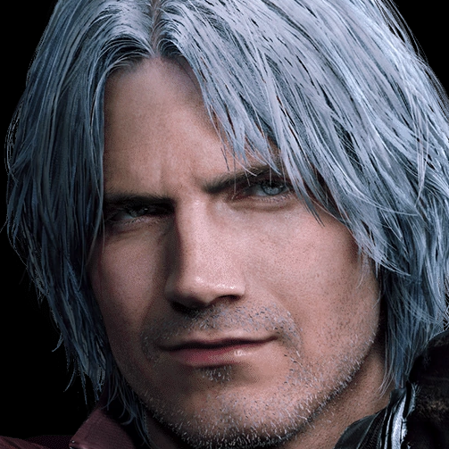
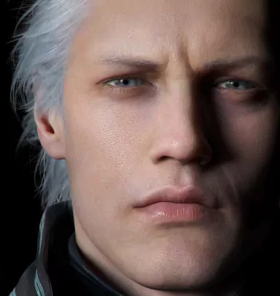
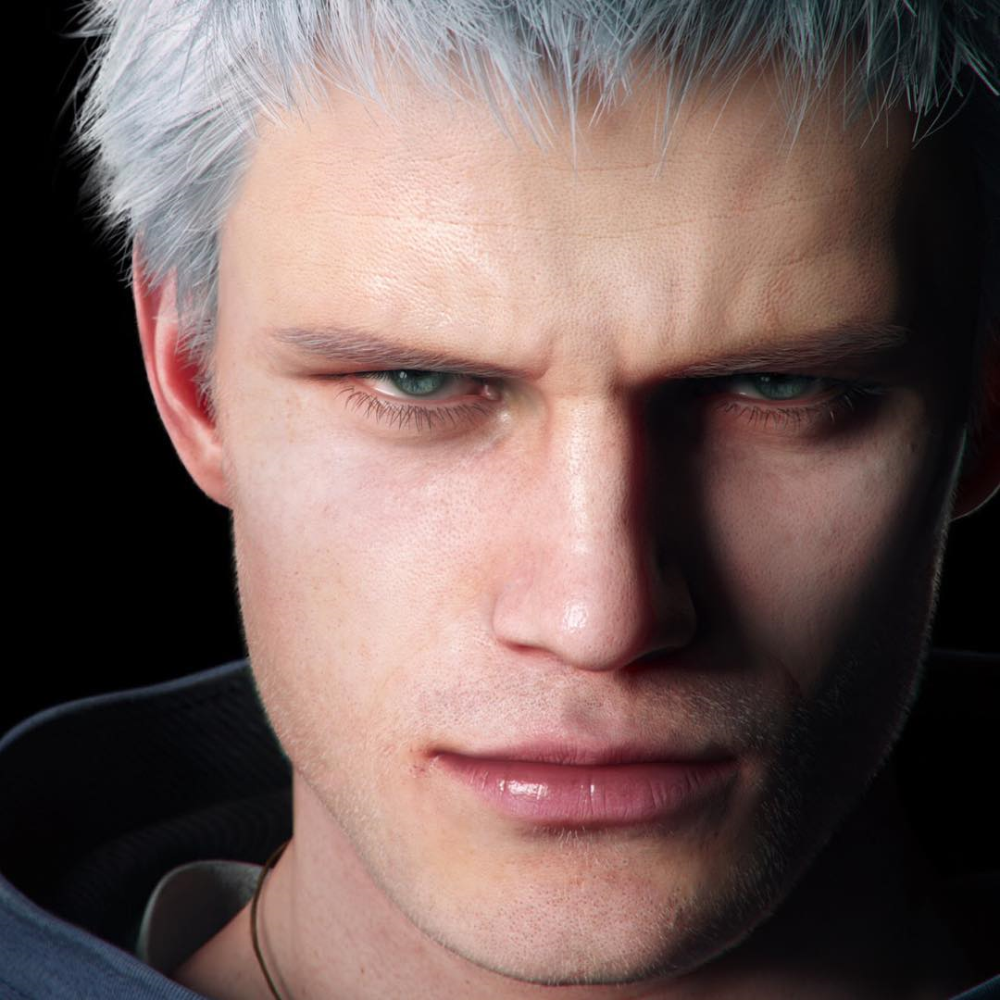
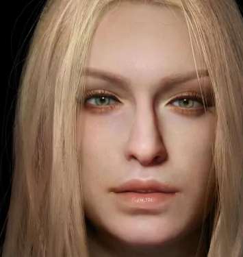
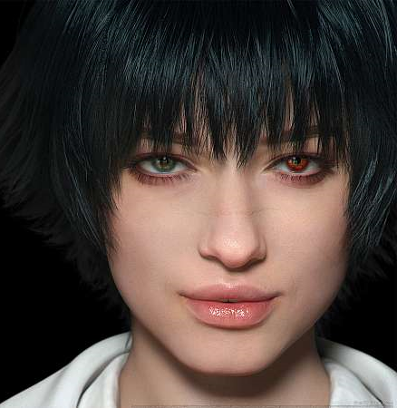
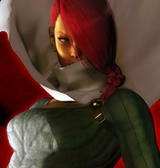
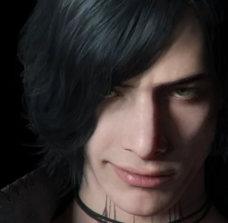
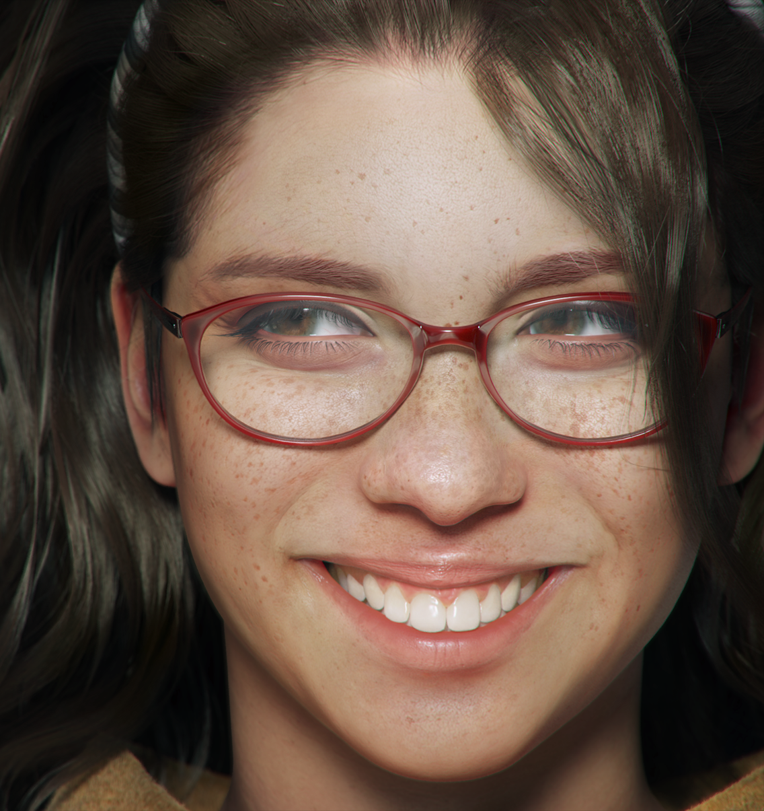

| Characters | Playable | Main Game Appearances (Canon) | Species | Affiliation | Main Weapons (Canon) |
|---|---|---|---|---|---|
| Dante | Yes | Devil May Cry, Devil May Cry 2, Devil May Cry 3: Dante's Awakening/Special Edition, Devil May Cry 4/Special Edition, Devil May Cry 5/Special Edition |
Half-Demon | Devil Hunter, Son of Sparda(Vergil's Younger Twin Brother), Devil May Cry(Business/Owner) |
Ebony&Ivory(Range), Rebellion(Former Melee), Force Edge(Former Melee), Sparda(Former Melee), Devil Sword Dante(Current Melee) |
| Vergil | Yes | Devil May Cry(As Nelo Angelo), Devil May Cry 3: Dante's Awakening/Special Edition, Devil May Cry 4: Special Edition, Devil May Cry 5/Special Edition |
Half-Demon | Devil Hunter, Dark Slayer, Son of Sparda(Dante's Older Twin Brother), Servant of Mundus(Former) |
Yamato(Melee), Summon/Mirage Swords(Range), Beowolf(Former Melee), Force Edge(Former Melee) |
| Nero | Yes | Devil May Cry 4/Special Edition, Devil May Cry 5/Special Edition |
Half-Demon | Devil Hunter, Order of The Sword(Former), Devil May Cry(Business/Current), Descendant of Sparda(Vergil's Son) | Red Queen(Melee), Blue Rose(Range), Devil Bringer(Special Melee), Devil Breakers(Various Special Types: Overture"Melee", Gerbera"Movement/Range", Punch Line"Range/Melee", Helter Skelter"Melee", Tomboy"Range/Melee", Buster Arm"Melee", Rawhide"Melee", Ragtime"Range/AoE") Yamato (Former) |
| Trish | Yes | Devil May Cry, Devil May Cry 2, Devil May Cry 4/Special Edition, Devil May Cry 5/Special Edition |
Demon | Servant of Mundus(Former), Devil Hunter, Devil May Cry(Business/Current) |
Sparda(Former Melee), Luce&Umbra(Range) |
| Lady | Yes | Devil May Cry 3: Dante's Awakening/Special Edition, Devil May Cry 4/Special Edition, Devil May Cry 5/Special Edition |
Human | Devil Hunter(Freelance), Devil May Cry(Business) | Kalinna Ann(Range), Pistol(Range), SMG(Range), Knife(Melee), Grenades(Special AoE, Range) |
| Lucia | Yes | Devil May Cry 2 | Artificial Demon | Devil Hunter, The Protectors | Cutlaseer(Melee), Throwing Knives(Range) |
| V | Yes | Devil May Cry 5/Special Edition | Incomplete Human (Vergil's Human Side) |
Devil Hunter, Devil May Cry(Temporary) | Griffin(Special Range), Shadow(Special Melee), Nightmare(Special Melee/Range, Devil Trigger), Cane |
| Nico | No | Devil May Cry 5/Special Edition | Human | Mechanic(Maker of the Devil Breakers), Devil May Cry(Business/Works with Nero) |
N/A |